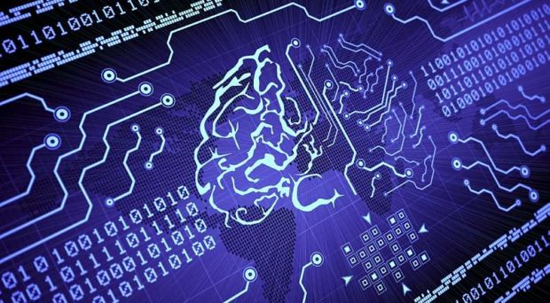

Índice
- Definición
- Características
- Uso
- Casos de uso
- Futuro
DEFINICIÓN:
Los sistemas conocidos como Interfaces Cerebro-Computadora (ICC), también conocidos como Interfaces Cerebro-Computadora (BCIs) en inglés, establecen una conexión directa entre el cerebro humano y un dispositivo computacional. Las señales cerebrales se utilizan para comunicarse y controlar dispositivos o aplicaciones informáticas a través de estas interfaces. La traducción de la actividad cerebral en comandos que una computadora o un dispositivo puede entender y ejecutar es el objetivo principal de las ICC.
CARACTERÍSTICAS
Las ICC presentan diversas características importantes:
- Captura de señales cerebrales: Utilizan sensoresinvasivos o no para analizar las señales cerebrales, como pueden ser: electroencefalogramas, electrocorticografías o implantes cerebrales.
- Procesamiento de datos: Los datos cerebrales capturados se procesan mediante algoritmos de machine learning y técnicas de procesamiento de señales para interpretar las intenciones del usuario.
- Personalización: Las ICC se adaptan a las necesidades individuales, ya que cada usuario puede tener patrones cerebrales únicos.
- Potencial de rehabilitación: Se utilizan en aplicaciones médicas y terapéuticas para personas con discapacidades físicas.
USOS
Las ICC son interfaces recientes, en proceso para avanzar con ellas, pero actualmente tiene diversos usos como:
- Asistencia para discapacitados: Las personas con parálisis, amputaciones o trastornos neuromusculares pueden usar ICC para controlar sillas de ruedas, dispositivos de comunicación, prótesis y otros equipos de asistencia.
- Neurociencia y rehabilitación: Se emplean en investigaciones neurocientíficas para comprender mejor el cerebro y en terapias de rehabilitación para recuperar funciones motoras y cognitivas después de lesiones cerebrales.
- Aplicaciones de accesibilidad: Ayudan a personas con discapacidades a interactuar con dispositivos electrónicos, como computadoras y teléfonos inteligentes, mejorando su calidad de vida.
- Potencial de rehabilitación: Se utilizan en aplicaciones médicas y terapéuticas para personas con discapacidades físicas.
FUTURO
Se esperan avances significativos en las siguientes áreas como:
- Mejoras en la precisión: Se espera que las ICC sean capaces de interpretar con mayor precisión las señales cerebrales, lo que permitirá un control más refinado de dispositivos y una comunicación más efectiva.
- Integración con la inteligencia artificial: La combinación de ICC con la IA permitirá desarrollar sistemas de asistencia y control más avanzados y autónomos.
- Aplicaciones médicas avanzadas: Las ICC continuarán desempeñando un papel crucial en la rehabilitación de pacientes con lesiones cerebrales y trastornos neurológicos, y podrían usarse en el tratamiento de enfermedades como el Parkinson o la epilepsia.
- Ética y privacidad: Con el aumento de la adopción de ICC, surgirán cuestiones éticas y de privacidad que requerirán regulación y consideración cuidadosa.